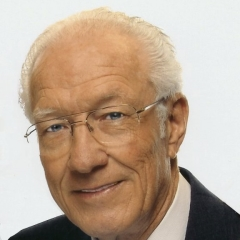

Don Sharp

This obituary ran in the Arizona Republic on February 2, 2014 (link).
Sharp, Donald Marion, 82, of Peoria, AZ passed away on January 15, 2014. Don's kindness as a father and friend was his most striking trait and he was deeply loved. Don was born and grew up in the small town of Walnut, Iowa. His parents were Donald and Helen Sharp. Don joined the U.S. Air Force not long after graduation from high school and served twenty years. He became a navigator and was able to travel, one of the activities he enjoyed most. He met Sylvia "'Vicky" McDonnell when stationed in England. They returned to the US, where they married in 1957 and had three children, Katherine, Steven, and Julie. After Don retired from the USAF in 1970, the family moved to Fort Lauderdale, Florida. Don re-married in 1977. His second wife, Sandra Gormley, had two children, John and Sheryl, who Don treated as his own. After the death of his second wife in 2001, he moved to Sun City, Arizona, closer to his three birth children. He was healthy and athletic and enjoyed time with his family, eating out with them and doing crossword puzzles together. He went dancing as many as five nights a week into his eighties. His health declined after a heart attack in August 2013. He died surrounded by all his loving children and his brother, Roger. Don is survived by his children Katherine, Steven, Julie, John, and Sheryl; by John's children; and by Don's brother, Roger, and sister, Dorothy. At his request, no formal services are planned. In lieu of flowers, please consider making a donation in Don's memory to the Air Force Aid Society or the American Heart Association.
Stories
Don Buzzed Walnut
Don's brother, Roger, passed along a story we enjoyed that a friend in Walnut passed along to him and said he could share with us.
The friend said that Don "decided to buzz Walnut with a plane one day." She said:
I was just a little girl but remember it very plain. I can’t remember where I was or much more about it. Dave, however remembers it very plain. He was walking down from his house (in front of the old Briggs place) when the plane went over. He was so afraid he hid behind a tree. (I am sure a tree would have been a lot of help to him.) Just talked to Jo Jane Walters and she told me that when the plane buzzed Walnut she was hanging up clothes and she fell to the ground. If I am not mistaken there was an article in the paper about Don’s way of saying hi to his mother. Jo said there was a story in the paper and it was either in 49 or the early 50's.Dave didn’t know Don and of course I was way too young to remember him. Just thought it was a funny way to remember someone."
Roger thinks this was about 1954. He said, "Mom and I didn’t see him when he went over. She was making dinner and I was washing up for dinner. He went over once, we went outside didn’t see anything so went back in the house and he came over again. Anyone who was around about that time remembers."
Don Rescued a Child
This story was in a 2009 email from one of Dad's friends, Maureen. Hopefully she doesn't mind us sharing it.
Oh yes, you probably did not know this, but when Don and I visited Bryce Canyon and we were listening to a guide, all of a sudden your dad disappeared from the group and ran to the canyon edge about 500 feet away to grab the arm of a 9-year old who had explored on his own and was falling down the steep slope. I can still see Don lying on the ground in the distance holding on that child and pulling him back up. What a hero, and how modest and humble he was when others praised him.
Photos
More Information
Please send Kathy your additions and updates for this page.
Don's kids would love to hear from you if you have any stories, interesting information, good old photos, etc., of Don Sharp. Please send your email to KidsOfDonSharp at gmail dot com (turn that into an email address) and let us know if we can share your email content here. Thank you!
Last updated: February 17, 2014